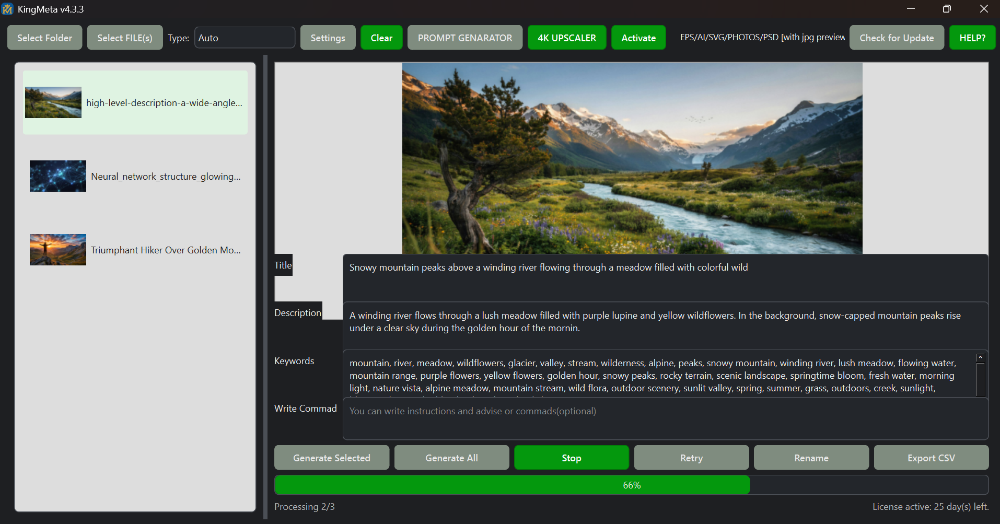
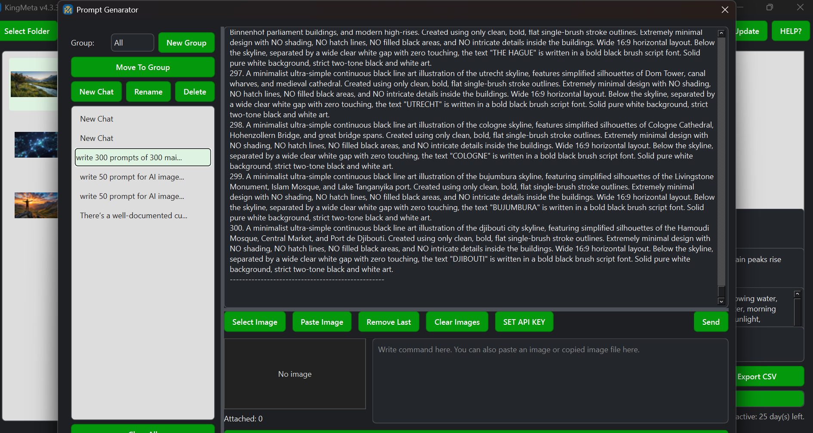
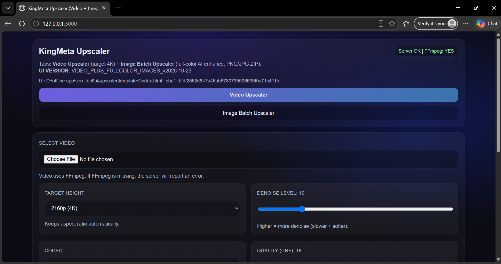

Gemini-Powered Metadata Generator
Generate titles, descriptions, and keyword lists for supported photos, videos, vector artwork, and design files. Review generated metadata before using it in a stock marketplace workflow.
Metadata workflowKingMeta brings microstock metadata generation, stock-agency CSV export, a Gemini-powered prompt generator and chat assistant, plus video and full-color batch image upscaling into one Windows desktop application.
A practical toolkit for stock creators who need to prepare metadata, develop image-generation prompts, chat with an assistant, and resize or enhance media without switching between several separate desktop tools.
Generate titles, descriptions, and keyword lists for supported photos, videos, vector artwork, and design files. Review generated metadata before using it in a stock marketplace workflow.
Metadata workflowExport metadata as CSV files for stock-contributor workflows. Prepare titles, descriptions, keywords, and other supported fields for agency submission formats.
CSV exportCreate and refine text-to-image prompts from written instructions and supported image references. Develop prompts for different visual styles and creative niches.
Text + image referencesChat with KingMeta AI inside the desktop application for general help, creative planning, and prompt-development guidance. Gemini responses require a configured API key and internet access.
API key + internet requiredChoose output heights including 2160p (4K) and 4320p (8K), keep or remove audio, choose H.264 or H.265, and adjust denoise and quality settings. Video processing uses FFmpeg-based resizing and enhancement.
FFmpeg processingProcess several images in one batch, choose 2×–6× scaling, select PNG or JPG output, and adjust enhancement strength, color denoise, and presets. The current image workflow uses Lanczos resizing and enhancement, not Real-ESRGAN AI reconstruction.
PNG / JPG batch outputWork with multiple assets, review generated metadata, retry processing where supported, and organize output for a more efficient stock-contributor workflow.
Creator productivityAccess metadata tools, prompt generation, chat assistance, and the local upscaler from one KingMeta desktop application.
Windows desktopSee the actual KingMeta interface, metadata workflow, prompt generator, and media upscaling tools. Select any screenshot to open the full-size image.

Generate and review stock titles, descriptions, and keyword lists for supported assets.
Metadata & SEO
Create image-generation prompts and use the built-in Gemini-backed chat assistant.
Prompts & Chat
Configure output resolution, codec, video quality, denoise, and audio options.
Video Processing
A view of KingMeta's integrated desktop interface and available tools.
Desktop Workspace
Explore the application interface used to access KingMeta's creator workflow.
Creator Workflow
Another view of the KingMeta desktop application and its workspace.
Application Preview127.0.0.1:5000 is a local address, not a public website.KingMeta is a Windows desktop toolkit for microstock contributors and designers. It combines metadata generation and CSV export with prompt creation, an in-app Gemini-backed chat assistant, and video and image upscaling tools.
No. The chat interface is integrated into KingMeta, but Gemini responses are generated through the Gemini API. A configured API key and internet connection are required.
The current image-batch workflow uses Lanczos resizing with color, contrast, sharpening, and optional denoise enhancements. It does not use Real-ESRGAN AI reconstruction.
The video tool offers output heights including 2160p (4K) and 4320p (8K), with FFmpeg-based resizing and quality controls. Enlarging a video does not restore detail that was absent in the source.
The metadata workflow supports vector and design assets such as EPS, AI, SVG, and PSD, along with supported photo and video formats. The upscaler has its own supported image and video file selections.
Visit the KingMeta GitHub Releases page to see available downloads. Confirm that the intended version is published before sharing the download link.